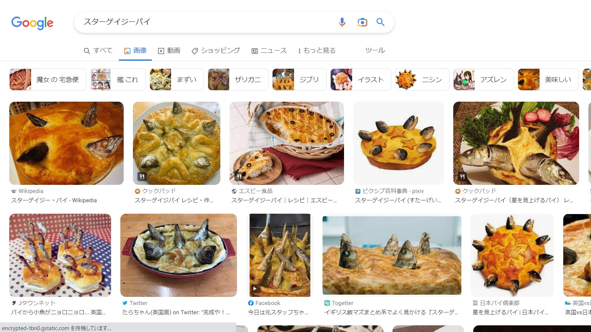
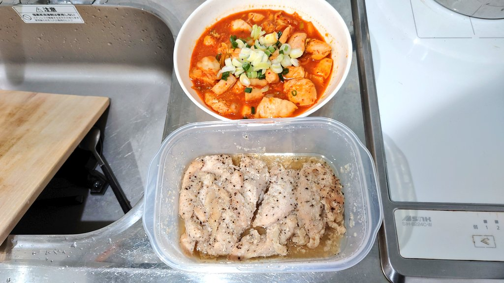

こんにちは、ザクザク食感です。
星を見る人 HO SHI WO MI RU HI TO
鶏を煮る人 TO RI WO NI RU HI TO
安くなった鶏むね肉を買って帰る途中、それしか考えていませんでした。
あとはグラム66円の鶏むね肉と、グラム88円の鶏むね肉が30円引きになったものってどっちが安かったんだろうってこととか。
でも30円引きの方がラッキーな気がするのでこれでいいや
スターゲイザー(星を見つめる人)って言葉、かっこよすぎませんか？ 響きがかっこいいと思います。
でもサジェストを検索していくと、

前衛的！
スターゲイザー(魚)はオコゼの英名で、スターゲイジーパイはイギリス料理らしいです。どっちも上を見上げているような外見なことに由来したネーミングらしいです。
星を見る人がスターゲイザーなら、鶏を煮る人はチキンシマーか？ なんか違う

下のやつはとりあえず保存するためにつくったけど、鶏ガラの素とかレモンとか入れるべきでした……
星を見る関連だと、「二人の囚人が鉄格子から外を眺めた。一人は泥を見た。一人は星を見た。」って言葉ありますよね。
何事も考え方次第だぞってことらしいです。値引きシール最高最高最高～！
それでは、さようなら。